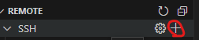
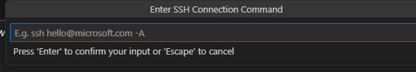
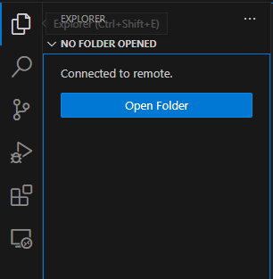
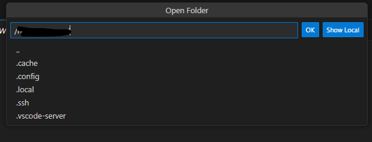
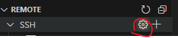
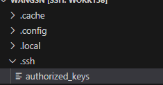

记录一下使用服务器的过程，包括如何使用shell连接服务器、如何使用vscode的Remote-SSH 插件连接服务器、如何修改用户密码、如何从终端拷贝文件、免密登录等。
SSH登录
ssh登录是最常见的方式，可以直接在shell窗口下用命令连接。使用这种方式需要对shell命令的使用有一定熟练度，熟悉使用Vim等。
ssh登录的命令：
1 | ssh -p [Port] [UserName]@[HostName] |
ssh免密登录：
1 | ssh-copy-id -i ~/.ssh/id_rsa.pub -p [Port] [UserName]@[HostName] |
scp拷贝文件
1 | scp -n [file path] -p [Port] [UserName]@[HostName] |
ssh生成公钥和私钥(最简单的，不添加邮箱、用户名和密码)
1 | ssh-keygen -t ras |
Remote-SSH
Vscode这个插件我觉得很好用，用这个插件和在本地用Vscode打开一个文件夹一样，非常方便，但是需要配置一下：
- 点 ’+‘创建连接

- 输入：
[UserName]@[HostName]:[Port]

输入密码
打开目录

选择对应目录

也可以直接修改插件的配置文件

配置文件格式如下：
1 | Host |
修改完成后重启一下VScode就可以了。
配置免密登录
SSH配置完免密登录后，VScode登录也可以免密登录。
也可以修改authorized_keys文件，把本地电脑的公钥拷贝到这个文件当中。

获取公钥的命令：
1 | cat ~/.ssh/id_rsa.pub |